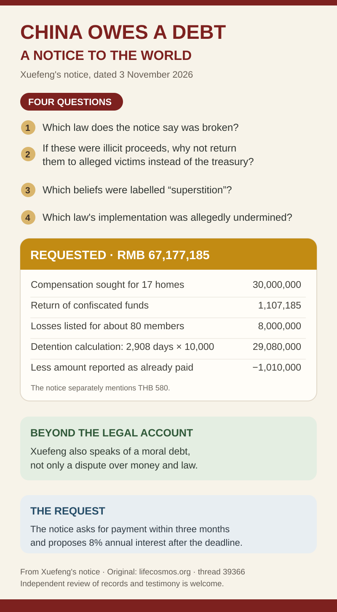

Lifechanyuan’s account · Public notice
China Owes a Debt:
A Notice to the World
We share Xuefeng’s notice so more people can hear Lifechanyuan’s account and its request for restitution. Start with the pictures, read the original Chinese post, and follow his invitation to examine the underlying material independently.
Start with the pictures
Four questions and a timeline
These English graphics are illustrated summaries, not line-by-line translations. Open each image for a full-size view.


← Swipe sideways to read the full timeline →

These illustrations help tell Lifechanyuan’s story: the first sets out Xuefeng’s questions and figures, and the second traces the events in the notice. We welcome readers to follow the original and examine the supporting material.
English overview
What does the notice say?
Xuefeng, guide of Lifechanyuan, signed a public notice dated 3 November 2026 titled “China Owes a Debt: A Notice to the World.” We have organized the key points here; this page is not a full English translation.
Xuefeng writes that 17 homes were destroyed, while the passage names 16 locations in China and separately describes residents leaving a home in Thailand. We keep that counting question visible. He also reports that approximately 80 members were apprehended beginning in July 2025 and refers to a Linzhou court judgment dated 23 October 2026 involving six members.
Xuefeng questions the proceedings and requests RMB 67,177,185 in restitution. His notice sets out the components of that amount. We welcome independent examination of the records and testimony described in his invitation.
Read the source
See the original in context
Original post: Xuefeng, “China Owes a Debt: A Notice to the World” (a debt claim notice). The notice is dated 3 November 2026; the forum post appeared on 5 November.
Open the original Chinese forum post ↗
The original above could be read without signing in when we checked on 6 November 2026. Another forum entry may require a sign-in. This English page is a reading guide, not a full translation.